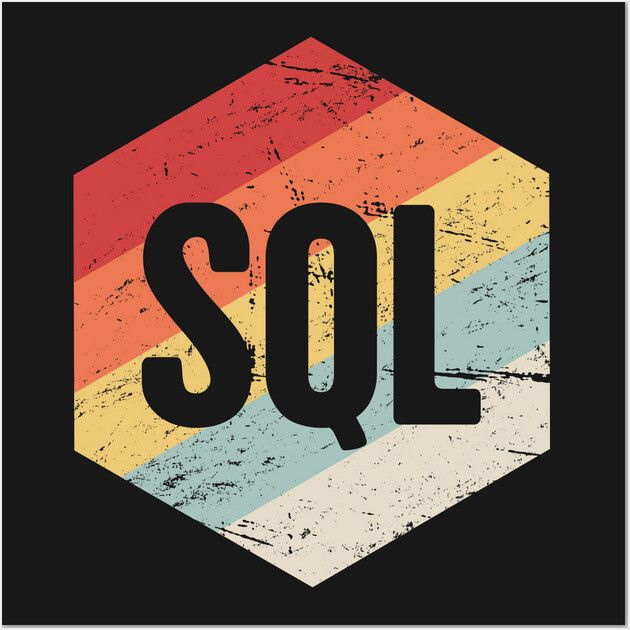

Java

Core Java used in backend banking applications.
OOP Concepts:
Inheritance Polymorphism Encapsulation AbstractionCollections:
ArrayList HashMap HashSet LinkedListException Handling:
Try-Catch Checked UncheckedJava Backend Developer with 2.2 years of experience in building and maintaining enterprise-level banking applications.
I specialize in designing backend logic, processing large-scale financial data, and writing optimized SQL queries for reporting systems.
My focus is on writing clean, maintainable, and scalable code that improves system reliability and performance in production environments.
I am a backend-focused software developer working in the banking domain, specifically on RBI reporting systems.
My role involves understanding complex financial data flows, transforming raw data into structured reports, and ensuring accuracy in system-generated outputs.
I strongly follow clean code principles, modular design, and debugging-driven development to ensure system stability.
I am also responsible for collaborating with cross-functional teams to resolve production issues and enhance system performance.
Surya Financial Technologies
Nov 2023 – Feb 2026 (2.2 Years)
Worked on RBI reporting system used for regulatory financial data submissions.
Key Responsibilities:
- Developed backend modules using Java for processing financial datasets
- Designed SQL queries for extracting, validating, and transforming large volumes of banking data
- Ensured accuracy of regulatory reports by implementing validation logic at multiple system levels
- Optimized existing queries and backend workflows to improve system performance and reduce processing time
- Worked closely with testing and support teams to resolve production issues and ensure system reliability
Impact:
- Improved data processing efficiency through optimized SQL logic
- Reduced manual intervention by automating report generation flows
- Enhanced system stability in production banking environment
Explore my technical expertise across different domains.
Core Java used in backend banking applications.
OOP Concepts:
Inheritance Polymorphism Encapsulation AbstractionCollections:
ArrayList HashMap HashSet LinkedListException Handling:
Try-Catch Checked Unchecked
Used for banking data processing and reporting.
Joins Subqueries Group By Indexes
Basic frontend knowledge.
HTML CSS JavaScriptWorked on banking application focusing on backend data processing and business logic validation.
Utilized Java and OOPs concepts to understand and support application workflows.
Applied Collections Framework (List, Map) for handling and processing data efficiently.
Wrote SQL queries for data retrieval, validation, and debugging.
Worked with REST APIs to handle request/response and ensure accurate data flow.
Collaborated with teams to identify issues and improve system performance and reliability.
Worked on operational risk management system focusing on backend data handling and workflows.
Used SQL queries for data verification, processing, and debugging.
Supported application logic validation and system flow understanding using Java concepts.
Worked with REST APIs to validate and manage data exchange between systems.
Collaborated with stakeholders to enhance system stability and performance.
B.Sc Computer Science – Gulbarga University
Email: mored1641@gmail.com
LinkedIn: linkedin.com/in/dhanashree-more